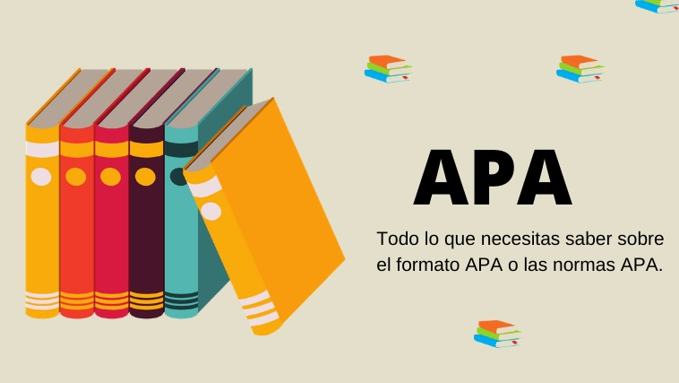

APA 7ma edicion

Las normas APA tienen su origen en la Asociación Estadounidense de Psicología durante el año 1929, donde se elaboraron estas normas para la presentación de trabajos relacionados con las ciencias de la conducta o las ciencias sociales. A lo largo del tiempo el manual que recoge las normas APA se ha ido actualizando, siendo la sexta edición de 2010 la reedición más reciente. El objetivo del establecimiento de estas normas es facilitar la comprensión lectora de los textos de carácter científico o similar, a través de unos elementos de presentación fijados. A día de hoy se emplea en las universidades de todo el mundo para redactar trabajos oficiales por alumnos y docentes.
Lo que regula las normas APA
Aunque con las posteriores ediciones de la copia original se han ido añadiendo otros conceptos y adaptándose a distintos ámbitos del conocimiento, las normas APA siempre regulan unos conceptos básicos. Estos son algunos ejemplos:
· Citas bibliográficas: textuales o indirectas.
· Citas cortas y citas largas.
· Referencias o fuentes citadas: libros, revistas y actualmente páginas web.
· Citar autor o autores.
· Nombre de la obra, año de creación o colección a la que pertenece el volumen.
· Márgenes y formato del documento.
· Tamaño y fuente de letra.
· Puntuación y abreviaciones.
· Implementación de tablas y otras figuras.
Otro elemento importante recogido en las normas APA son los niveles de titulación, es decir, los parámetros a seguir para colocar títulos, subtítulos, etc. Así mismo, determina cómo evitar el plagio a la hora de citar, normalmente con el empleo de comillas a la hora de señalar las palabras de otro autor.
Algunos consejos para implementar las normas APA correctamente
Muchas veces puede resultar difícil entender las normas APA en el texto original, para ello vamos a resumir algunos elementos que pueden ser útiles a la hora de realizar tus trabajos:
· El encabezado se escribe en mayúscula en la línea superior de la portada. En esta página se incluye también el número de página, que aparece en el margen derecho, sin incluir la abreviación “pag”.
· En la primera página del texto se debe repetir el título completo en la primera, con mayúsculas y minúsculas.
· No se debe usar encabezado para la introducción.
· Con respecto a los signos de puntuación, en los programas de escritura por ordenador es mejor dejar dos espacios después de ellos al final de una oración.
· Según las normas APA si añades una cita de más de cuarenta palabras, debe figurar como un bloque con una sangría sin comillas.
Al inicio de cada párrafo, deja un margen de cinco espacios. Los editores de texto como Word permiten configurar esta opción de manera automática.
La American Psychological Association (APA) elabora desde 1929, el manual de estilo más utilizado en la redacción científica en el campo de las ciencias sociales y de la conducta.
¿Cuál es la edición más actual del Manual de publicaciones de la APA?
La 7ª edición del Manual de publicaciones de la APA, publicada en octubre del 2019, es la más actual. Sin embargo, la 6ª edición, publicada en 2009, todavía es utilizada por muchas universidades y revistas.
Referencias y citas en el texto según el formato APA
Cuando se trata de citar fuentes, en esta 7ª edición se han agregado pautas para que citar fuentes online sea más fácil y claro.
En total se proporcionan 114 ejemplos, que van desde libros y revistas hasta recursos audiovisuales y redes sociales. Para cada categoría de referencia se proporciona una sencilla plantilla para ayudarte a comprender y aplicar las nuevas pautas de citación. Sin embargo, los mayores cambios en esta 7ª edición son los siguientes:
*La ubicación geográfica del editor ya no se incluye en la referencia.
*Las citas en el texto para publicaciones con tres o más autores, ahora se abrevian desde la primera cita, es decir, solo se incluye el nombre del primer autor y seguidamente “et al.”.
(Taylor, Kotler, Johnson, & Parker, 2018)
(Taylor et al., 2018)
*Los apellidos e iniciales de hasta veinte autores (en lugar de siete) deben incluirse en la entrada de la referencia.
Miller, T. C., Brown, M. J., Wilson, G. L., Evans, B. B., Kelly, R. S., Turner, S. T., . . . Lee, L. H. (2018).
Miller, T. C., Brown, M. J., Wilson, G. L., Evans, B. B., Kelly, R. S., Turner, S. T., Lewis, F., Nelson, T. P., Cox, G., Harris, H. L., Martin, P., Gonzalez, W. L., Hughes, W., Carter, D., Campbell, C., Baker, A. B., Flores, T., Gray, W. E., Green, G., . . . Lee, L. H. (2018).
*Los DOI tienen el mismo formato que las URL. La etiqueta DOI ya no es necesaria.
doi: 10.1080/02626667.2018.1560449
https://doi.org/10.1080/02626667.2018.1560449
*Las URL ya no deben ir precedidas por “recuperado de”, a menos que se necesite especificar una fecha de recuperación concreta. Además, sí se debe incluir el nombre de la página web (a menos que sea el mismo que el del autor).
Streefkerk, R. (2019, 11 de octubre). APA 7th edition: The most notable changes [Blog post]. Recuperado de https://www.scribbr.com/apa-style/apa-seventh-edition-changes/
Streefkerk, R. (2019, 11 de octubre). APA 7th edition: The most notable changes. Scribbr. https://www.scribbr.com/apa-style/apa-seventh-edition-changes/
*En el caso de los libros electrónicos, el formato, la plataforma o el dispositivo (por ejemplo, Kindle) ya no se incluyen en la referencia, aunque sí se incluye el editor.
Brück, M. (2009). Women in early British and Irish astronomy: Stars and satellites [versión Kindle]. https:/doi.org/10.1007/978-90-481-2473-2
Brück, M. (2009). Women in early British and Irish astronomy: Stars and satellites. Springer Nature. https:/doi.org/10.1007/978-90-481-2473-2
*Se proporcionan pautas claras para incluir colaboradores que no sean autores y editores. Por ejemplo, al citar el episodio de un podcast, se debe incluir al anfitrión de ese episodio; al citar el episodio de una serie de televisión, se debe incluir al guionista y al director de ese episodio, etc.
*Se incluyen decenas de ejemplos para tipos de fuentes online, tales como episodios de podcasts, publicaciones en redes sociales y vídeos de YouTube. También se explica el uso de emojis y hashtags.
*Lenguaje inclusivo y libre de prejuicios
Escribir de manera inclusiva y sin prejuicios es el nuevo estándar, por eso el nuevo Manual de publicaciones de la APA contiene un capítulo entero dedicado a este tema.
Las pautas proporcionadas por la APA ayudan a quienes escriben a reducir los prejuicios en torno a temas como el género, la edad, la discapacidad, la identidad racial y étnica y la orientación sexual, aparte de ser sensibles a las etiquetas y pretender describir a las personas de una manera correctamente específica. Algunos ejemplos incluyen:
En lugar de usar adjetivos como sustantivos para etiquetar grupos de personas, se prefiere el uso de frases descriptivas.
Los pobres.
Personas que viven en la pobreza.
En lugar de utilizar categorías amplias, se prefiere el uso de rangos de edad exactos, ya que son más relevantes y específicos.
Personas mayores de 65 años.
Personas en el rango etario de 65 a 75 años.
Formato del documento según APA
En esta 7ª edición, la APA ha decidido proporcionar diferentes pautas de formato en función de si un documento ha sido escrito por un profesional o por un estudiante; para ambos tipos se incluye un ejemplo de muestra. Algunos cambios significativos que se incluyen en esta nueva edición son:
Mayor flexibilidad con respecto a las fuentes, las opciones incluyen: Calibri 11, Arial 11, Lucida Sans Unicode 10, Times New Roman 12 y Georgia 11.
El encabezado en la portada ya no debe incluir la palabra “Encabezado:”, ahora solo debe contener el número de página y el título del artículo (abreviado).
El encabezado se omite en los trabajos realizados por estudiantes (a menos que su tutor indique lo contrario).
La jerarquía para los títulos de los niveles 3 al 5 se actualizan para mejorar su legibilidad.
Mecánica del estilo
En términos de estilo, esta 7ª edición no arroja demasiados cambios, aparte de algunas pautas actualizadas y mejor explicadas. Sin embargo, hay dos cambios significativos:
Usa solo un espacio después de un punto al final de una oración.
Usa comillas dobles (también denominadas inglesas) en lugar de cursiva para referirte a ejemplos lingüísticos.
El laísmo es el uso de las formas la y las del pronombre átono para el complemento indirecto femenino, en lugar de le y les.
El laísmo es el uso de las formas “la” y “las” del pronombre átono para el complemento indirecto femenino, en lugar de “le” y “les”.
Generador APA de citas basado en la 7ª edición
Con el Generador APA de Scribbr puedes citar fácilmente tus fuentes, de acuerdo con las nuevas pautas publicadas por la 7ª edición del Manual de publicaciones de la APA. Es preciso, rápido y fácil de usar. ¡Dale una oportunidad!
APA 7ª ed. 2022: Manual actualizado con 8 importantes modificaciones en sus pautas de estilo y gramática entre otras…
El formato o modelo APA fue publicado en octubre del 2019, esta es la séptima edición del “Manual de Publicaciones de la APA” (Publication Manual of the American Psychological Association), pasaron 10 años desde que se publicó la sexta edición para tener la nueva versión oficial actualizada del formato APA.
La séptima edición del manual de estilo APA va dirigido a docentes, estudiantes, escritores, editores y desarrolladores de las ciencias sociales, en ramas como la pedagogía, psicología,logopedia,lingüística, filosofía, historia, sociología, antropología, psicolingüística, entre muchas otras.
Normas Actualizadas del Manual de Estilo APA (Actualizaciones 2022)
Las pautas establecidas por las normas APA en su séptima versión han cambiado varios parámetros con la última actualización del manual, los trabajos en formato APA se realizan bajo estas nuevas reglas para una mejor comprensión del lector.
Los ocho cambios más significativos que se realizaron en las normas APA son:
ELEMENTO
ACTUALIZACIÓN
*Fuentes (tipo de letra)
Ahora se aceptan más tipos de letra en el formato APA, además de la conocida Times
New Roman, podemos hacer uso de Arial, Calibri, Lucida Sans Unicode y Georgia.
*Títulos y Subtítulos
Para que la estructura visual de un formato APA se comprenda mejor se pueden utilizar
5 niveles de títulos y subtítulos.
*Citas y Referencias
Las citas y referencias APA han tenido cambios de mejoras con la nueva actualización,
donde; a) podemos omitir en la referencia el lugar de origen de un editor. b) en caso de haber más de tres autores solo escribiremos el nombre del primero seguido de “et al.”. c) el límite
máximo de autores se extiende hasta veinte…
Etiqueta DOI (identificador
de objeto digital)
Ya no es necesario escribir el DOI, simplemente con colocar la dirección
URL del sitio de origen donde se obtuvo la información es suficiente.
Antes de la URL se coloca la etiqueta “precedidas de:”
Recuperado de:
Si no se requiere incluir fecha de recuperación, las citaciones ya no
llevan el “recuperado de:”
3 o más autores
Se escribe el nombre del primer autor más “et al.” cuando el trabajo
tenga 3 o más editores.
20 autores
Ahora se pueden colocar hasta 20 autores en la lista final de
referencias (antes 7).
Trabajos en formato APA de estudiantes
En documentos de trabajos de estudiantes ya no es
exigido el título corto.
Interlineado o Espaciado
ELEMENTO
INTERLINEADO
Página de título
doble
Resumen
doble
Texto
doble
Pie de página
sencillo
Referencias
doble
Cuerpo de tabla
sencillo, 1.5 o doble
Título, numeración y observación
doble
Figura o imagen
sencillo, 1.5 o doble
Subtitulo de figura
doble
Apéndice
doble
Ecuaciones
triple o cuádruple
Abreviaciones de un formato APA
PALABRA
ABREVIATURA
PALABRA
ABREVIATURA
Capítulo
cap.
Página
p.
Edición
ed.
Páginas
pp.
Edición revisada
ed. rev.
Volumen
vol.
Editor
ed.
Volúmenes
vols.
Editores
eds.
Número
núm.
Traductor
trad.
Parte
pte.
Traductores
trads.
Suplemento
supl.
Sin fecha
s.f.
Uso de letras cursivas con Normas APA
Si, aunque no lo creas, el Manual APA (Para sexta o séptima edición) también dicta pautas para aplicar o evitar el uso de la letra cursiva en trabajos escritos. Lista detallada y ejemplos para cada caso:
¿Cuándo se debe aplicar la letra cursiva?
(1) Lista de referencias: Se debe aplicar únicamente a la fuente de información; títulos del libro, informes, páginas web, nombre de la enciclopedia, ideas de autor, tesis, entre otros. Éste mismo caso aplica para incluir el número de volúmenes asociados a revistas, periódicos, libros (La coma debe ir separada):
Cano, G. (1990). Diferencias nacionales en Colombia. El espectador, pp.2-4
(2) Definir un término: La letra cursiva puede ser usada para definir un término o una palabra clave incluida en su trabajo; lo anterior en forma de texto o cita textual:
La media muestral , que se refiere a la muestra media o media empírica así como a la covarianza de la muestra con las estadísticas que se calculan con base en una colección de datos en una o más variables de tipo aleatorio. Se refiere a cada uno de los valores que se observan en las variables.
(3) Para incluir resultados (Con excepción de letras griegas): Utilice letra cursiva cuando incluye símbolos estadísticos o variables algebraicas (Cada símbolo debe ir separado de la coma, guíese con el ejemplo):
SC = 421
Mayúsculas y minúsculas con Normas APA
Cualquier trabajo escrito con Normas APA debe incluir Mayúsculas o minúsculas; por norma general, después de un punto (.) o un nuevo párrafo, la mayoría de las letras principales en una palabra iniciarán con Mayúscula, mientras que las secundarias deben mantenerse en minúsculas.
Tenga en cuenta: De acuerdo al Estilo APA, la capitalización con Normas APA únicamente varia si hace uso de oraciones o títulos. Aclare sus dudas con la siguiente lista y ejemplos para cada caso:
(1) Para títulos: Cada encabezado representa la estructura general de un proyecto académico, si hace uso del título/subtítulo entre los niveles 1 – 2 – 3 debe hacer uso tanto de mayúsculas como de minúsculas; es decir, cada palabra nueva debe iniciar en Mayúscula y las secundarias deben mantenerse en minúsculas:
Presentación de Trabajos en Normas APA (Título de nivel 1; utilizado para determinar la estructura general del proyecto, cada palabra debe iniciar en Mayúscula y tener el formato de negrita)
¿Cuál es el Formato de las Normas APA? (Título de nivel 2; Da sección a las partes de un proyecto; por ejemplo: El título «Métodos» se puede dividir en «Métodos de Muestreo» o «Análisis De Datos»)
¿Cómo Aplicar las Márgenes? (Título de nivel 3; inicia en un nuevo párrafo, con letra cursiva y cada palabra nueva debe iniciar en Mayúscula.)
¿Cuándo se debe usar la Mayúscula?
La primera palabra, luego de un punto (.), guion (-) o inicio de un nuevo párrafo.
La primera palabra en un título o subtítulo (Para cualquier tipo de nivel)
En los títulos que representen tablas, figuras o apéndices (Primera letra)
Primeras palabras que indiquen nombres (Andrés) o países (Colombia)
Para representar la estructura de un trabajo con APA (Portada / Introducción / Discusión)
(2) Para oraciones: A diferencia del primer caso «Títulos», el formato «Oraciones» mantiene todas las palabras en minúsculas (Con excepción de los nombres de personas o países)
(…) sea un hombre o sea más que un hombre. Sea firme con su propósito y firme como una piedra(…)
(…) el hombre débil se vuelve fuerte cuando no tiene nada, porque sólo entonces puede sentir(…)
Julio Verne en Italia solía decir: Mientras el corazón late, mientras el cuerpo y alma siguen juntos, no puedo admitir que cualquier criatura dotada de voluntad tiene necesidad de perder la esperanza en la vida [Utilice Mayúsculas para nombres, países o luego de un punto, guion o doble punto (:).
¿Cuándo se debe usar la minúscula?
Palabras secundarias que son de tres letras o menos en un título o encabezado (de, las, en, etc)
Conjunciones cortas (y, si, ni, o, así, que)
Preposiciones cortas (como, en, por, para, en, de, por, a, vía)
Artículos (la, el, los, las)
Oraciones incluidas en el trabajo escrito
Uso de comillas con Normas APA: ¿Cuándo usar y evitar?
¿Sabía usted que las comillas son signos tipográficos que usualmente se usan para enfatizar palabras, llamar la atención o usar frases de otro autor? Aunque no lo crea, la Asociación Americana de Psicología (APA) también establece casos para incluir o evitar el uso de las comillas en trabajos escritos.
Descripción del Caso
Ejemplos
Para enfatizar un término, palabra, frase, carta u oración como un ejemplo lingüístico o Para incluir una cita textual o directa corta (Qué no supere las 40 palabras)
El término «Enfatizar» (…)
La letra «P» es usada (…)
La palabra «Soleo» fue inventada por (…)
La mayoría de los encuestados respondieron «No» a las siguientes preguntas (…)
Los estudiantes escribieron «Prometo respetar el código de y leyes de la escuela»
Para incluir una cita textual o directa corta (Qué no supere las 40 palabras)
García (2016) explicó: “No será posible realizar una gestión integral de los proyectos, si las
entidades no rediseñan sus estructuras organizacionales”
Para presentar una lista de palabras (Lista de elementos) que destaquen sobre un tema/resultado en el mismo párrafo:
Separe las palabras con una coma
Implemente una lista con viñeta o numerada para evitar el uso de comillas.
Las palabras más buscadas por los participantes fueron «perros», «gatos», «comida», «juegos gratis», «trabajo remoto».
Las jergas más usadas por los españoles expresadas en el juego fueron «Canijo», «quillo», «picha», «friki».
Utilice comillas cuando desee anexar jergas, palabras inventadas o pocos conocidas o utilizadas para expresar un comentarios irónicos
El participante descortés llamó «avara» a su compañera porque ella no le quiso dar dinero para comprar un esfero (…)
También se incluyó el grupo denominado «Pasmarote» usualmente usada para describir aquellas personas embobadas o con pereza.
Para expresar el elemento o pregunta en una encuesta, prueba, instrucción para los participantes.
Si los términos o elementos son largos debe presentarlos en la hoja: Apéndices o anéxelos como una cita directa mayor de 40 palabras en un nuevo párrafo sin comillas.
La segunda pregunta en la prueba era «¿Cuántos integrantes hay en tu familia?»
50 de los participantes debían seguir el segundo paso de las instrucciones «Correr con un ritmo intenso sin comida previa durante 20 minutos»
Para incluir una cita de cita (Cuando se menciona un texto citado por otro autor)
Agregue la etiqueta [Citado por]
La frase «Lo que sabemos es una gota de agua» nos indica que lo que sabemos es apenas una parte del conocimiento pleno, somos una partícula en un inmenso universo y de este mismo tamaño es nuestro conocimiento. (Citado por … en 2020)
Utilice comillas cuando incluye el título de una revista periódico o capítulo de libro dentro del texto (Únicamente dentro del texto y no como cita textual)
No use comillas en la lista de referencias o cita textual.
Tal fue la impresión que me dejo la realización de éste proyecto que recordé la frase del famoso libro «Cien años de soledad» (…)
El artículo de Sherman (2019) «El arte de dar retroalimentación» abordó cómo las enfermeras pueden dar retroalimentación efectiva.
¿Cuándo NO usar comillas en APA?
NO use las comillas si su trabajo escrito no cumple con algunos de los casos anteriores; los siguientes son casos donde se incluyen comillas por simple desconocimiento
Descripción del Caso
Solución
No utilice comillas para enfatizar una palabra, frase clave, término
El Manual APA le recomienda hacer uso de la letra cursiva
La media muestral, que se refiere a la muestra media o media empírica así como a la covarianza de la muestra (…)
Cuando incluya una cita textual mayor de 40 palabras
Las citas textuales directas mayores de 40 palabras deben ir sin comillas, además de ser incluidas en un nuevo párrafo
Para expresar un número (Resultado)
Los números no necesitan ser incluidos con el uso de comillas; eso si, el Manual APA establece ciertas pautas: Números con APA
Expresar la fuente en la página de bibliografía o lista de referencias
Haga uso de la letra cursiva para expresar la fuente (Título de la investigación) en una referencia:
Rivas, A. (2018, Julio 18). Aprovechamiento energético [Tesis de pregrado]. Universidad Militar Nueva Granada, Bogotá.